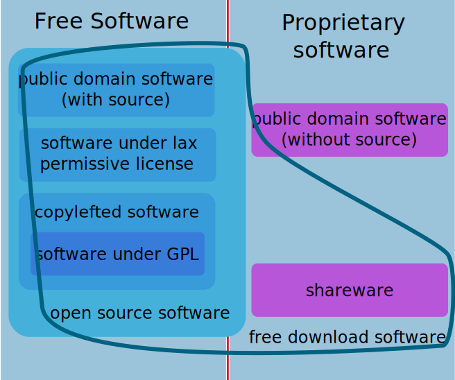

FREE AND OPEN SOURCE SOFTWARE
“FOSS”
Presentation by Gerald Pape, g.pape [at] wwu.de
Agenda
- Nonfree or “proprietary” software
- Free as in “free speech”
- Four basic freedoms of free software
- The Open Source Definition
- Free and open source software
- Categories of free and open source and nonfree software
- Conclusion
- Discussion
Nonfree or “proprietary” software
- is not free
- restricts redistribution or modification
- source code unavailable
- “controls” the user
Free as in “free speech”
(not in “free beer”)
- “Free software” is matter of liberty, not price
- “Free” relates to freedom over the software.
- The software respects the user.
Four basic freedoms:
Free as in free…
- …to run the software for any purpose
- …to study how the software works and adapt it to your needs
- …to redistribute copies of the software
- …to improve the software and release your improvements to the public
The Open Source Definition
- Free Redistribution
- Source Code
- Derived Works
- Integrity of The Author's Source Code
- No Discrimination Against Persons or Groups
The Open Source Definition (contd.)
- No Discrimination Against Fields of Endeavor
- Distribution of License
- License Must Not Be Specific to a Product
- License Must Not Restrict Other Software
- License Must Be Technology-Neutral
Free and open source software
Term to describe software that both is open source and respects its users.
Can be used without bias for either side.
Is sometimes also called free/libre/open-source software (FLOSS)
Categories of free and open source and nonfree software

Edited from http://gnu.org/philosophy/category.svg
Conclusion
Free software and open source software have very similar meanings.
But the groups have different views on how to communicate their concepts
Discussion
References
- http://www.fsf.org/about/what-is-free-software
- http://www.gnu.org/philosophy/free-sw.html
- http://opensource.org/osd
- http://opensource.org/faq#free-software
- http://www.gnu.org/philosophy/categories.en.html